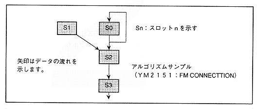

slot is the data in the sound stack ("SOUS"). Therefore, modulating in one slot means assigning and connecting the sound stack corresponding to the modulation slot to the modulated slot. As an actual function, there is "MDXSL" and "MDYXL" that select the sound stack to be input to the modulation inputs Y and X, so it is necessary to set the parameters obtained by the arithmetic method explained earlier in this register there is.
Also, there are two modulation inputs, X and Y, to the slot. Note that these two inputs will be halved by the averaging operation. Therefore, when the input of the slot is connected by one, set the same parameter to the input of X and Y, and input the sound stack data of the same slot. If only one side input is set, unexpected data may be mixed in, or the FM modulation level may be felt small.
Next, we will calculate each parameter using the calculation method of “MDXSL” and “MDYSL”, using an example of a 4-slot FM sound source actually used in FM speech synthesis.
First, we will explain how to read the FM speech synthesis algorithm shown in Figure 4.33.
Figure 4.33 Algorithm with 4 slots

● Slot 0
】 Slot 0 uses the output for slot 2 input, while slot 0 output for slot 0 input. This is called self-feedback.
● Slot 1
】 Slot 1 uses output as input for slot 2.
● Slot 2
∙ Slot 2 uses the output of slot 0 and slot 1 as input. The output is used for slot 3 input.